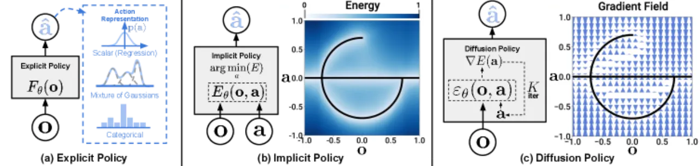
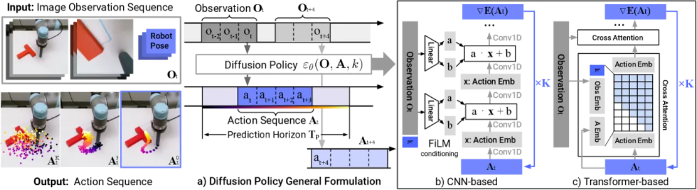
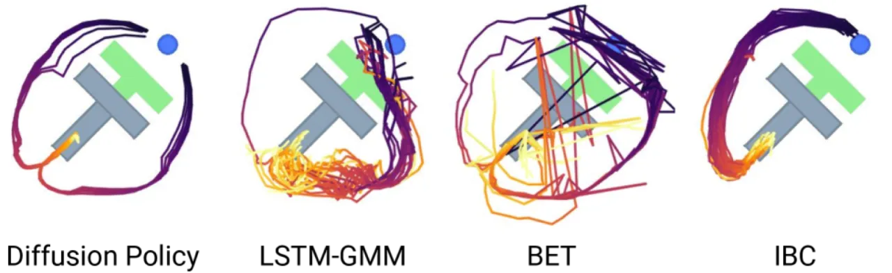
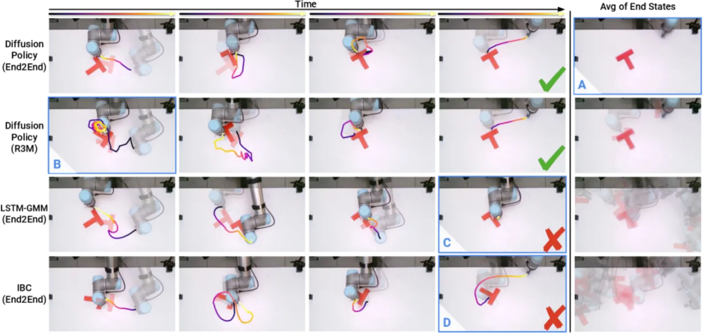
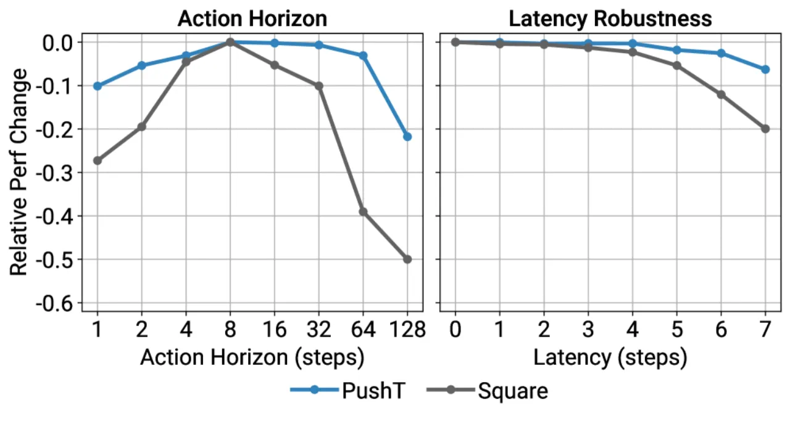

Diffusion Policy 将去噪扩散概率模型（DDPM）引入机器人策略学习：将机器人动作生成建模为条件去噪扩散过程， 通过学习动作分布的分数函数梯度，在推理时经多步去噪输出一段动作序列。在 4 个操作基准的共 15 个任务中， Diffusion Policy 平均超越现有最优方法 46.9%，并在多个真实机器人任务上达到接近人类示范的性能。
机器人 visuomotor 策略学习面临三大核心挑战：多模态动作分布（同一状态存在多种合理行为）、 高维动作序列的时序相关性以及高精度控制要求。 现有方法（显式策略、IBC 隐式策略、BET 序列模型）各有缺陷，均难以同时满足这三点。
"This work presents Diffusion Policy, a new way of generating robot behavior by representing a robot's visuomotor policy as a conditional denoising diffusion process on robot action space."

Diffusion Policy 将策略参数化为条件去噪扩散过程：给定最近 To 步观测 Ot， 从高斯噪声出发，经过 K 步去噪（学习动作分布的分数函数梯度），输出 Ta 步动作序列， 再通过 receding-horizon control 执行其中前 Ta 步并滑窗更新。 论文提供两种网络骨干：CNN-based（DP-C）与Transformer-based（DP-T）。

训练时对动作加噪，学习预测噪声（或分数）；推理时从 AK ∼ 𝒩(0, I) 出发， 迭代执行 K 步 DDPM 去噪（或 DDIM 加速推理）得到动作序列 A0。 关键优势：能量函数无需显式定义，分布覆盖度由扩散过程天然保证，可表达任意复杂的多模态分布。
每次推理预测未来 Ta 步动作，实际执行前 Ta 步， 再以滑窗获取新观测、重新推理。这一机制在保持时序一致性（trajectory coherence）的同时 保留闭环响应能力。论文消融实验表明 action horizon 的选择对性能影响显著。
观测 Ot（RGB 图像或状态向量）仅作为条件输入去噪网络， 而非被去噪的对象，从而保持动作空间扩散的简洁性。 CNN 变体用 FiLM conditioning；Transformer 变体用 cross-attention。
扩散模型天然支持多峰（multimodal）分布：同一观测下策略可采样出截然不同但各自合理的动作轨迹， 且每次 rollout 内部保持一致性，不会在执行中途切换模式。

实验覆盖 4 个基准（Robomimic 仿真、Push-T 仿真、真实 Push-T、多个真实操作任务）， 基线包括 BC、LSTM-GMM、IBC、BET。指标为任务成功率（sim）和 IoU / 成功率（real Push-T）。 DP-C = CNN-based Diffusion Policy，DP-T = Transformer-based Diffusion Policy。
| 方法 | Lift | Can | Square | Transport | ToolHang | Push-T |
|---|---|---|---|---|---|---|
| LSTM-GMM | 1.00/0.96 | 1.00/0.93 | 1.00/0.91 | 1.00/0.81 | 0.95/0.73 | 0.86/0.59 |
| IBC | 0.79/0.41 | 0.15/0.02 | 0.00/0.00 | 0.01/0.01 | 0.00/0.00 | 0.00/0.00 |
| BET | 1.00/0.96 | 1.00/0.99 | 1.00/0.89 | 1.00/0.90 | 0.76/0.52 | 0.68/0.43 |
| DP-C（ours） | 1.00/0.98 | 1.00/0.97 | 1.00/0.96 | 1.00/0.96 | 1.00/0.93 | 0.97/0.82 |
| DP-T（ours） | 1.00/1.00 | 1.00/1.00 | 1.00/1.00 | 1.00/0.94 | 1.00/0.89 | 0.95/0.81 |
| 方法 | Lift | Can | Square | Transport | ToolHang | Push-T |
|---|---|---|---|---|---|---|
| LSTM-GMM | 1.00/0.96 | 1.00/0.95 | 1.00/0.88 | 0.98/0.90 | 0.82/0.59 | 0.64/0.38 |
| IBC | 0.94/0.73 | 0.39/0.05 | 0.08/0.01 | 0.00/0.00 | 0.03/0.00 | 0.00/0.00 |
| DP-C（ours） | 1.00/1.00 | 1.00/1.00 | 1.00/0.97 | 1.00/0.96 | 0.98/0.92 | 0.98/0.84 |
| DP-T（ours） | 1.00/1.00 | 1.00/0.99 | 1.00/0.98 | 1.00/0.98 | 1.00/0.90 | 0.94/0.80 |
| 方法 | IoU | 成功率 | 时长（秒） |
|---|---|---|---|
| 人类示范 | 0.84 | 1.00 | 20.3 |
| IBC (pos) | 0.14 | 0.00 | 56.3 |
| IBC (vel) | 0.19 | 0.00 | 41.6 |
| LSTM-GMM (pos) | 0.24 | 0.20 | 47.3 |
| LSTM-GMM (vel) | 0.25 | 0.10 | 51.7 |
| DP (R3M) | 0.53 | 0.65 | 57.5 |
| DP (ImgNet) | 0.24 | 0.15 | 55.8 |
| DP E2E Trans（ours） | 0.80 | 0.95 | 22.9 |
| DP E2E CNN（ours） | 0.66 | 0.80 | 31.7 |
| 任务 | 成功率 | 试验次数 | 示范数 |
|---|---|---|---|
| Mug Flipping（6DoF 抓取+翻转杯子） | 90% | 20 | — |
| Sauce Pouring（酱料倒浇披萨） | 79% | — | — |
| Sauce Spreading（酱料涂抹） | 100% | — | — |
| 双臂 Egg Beater（打蛋器操作） | 55% | 20 | 210 |
| 双臂 Mat Unrolling（展开垫子） | 75% | 20 | 162 |
| 双臂 Shirt Folding（折叠衬衫） | 75% | 20 | 284 |


训练稳定性方面，论文专门与 IBC 对比（Figure 6）：IBC 的 evaluation success rate 剧烈震荡， 即便训练 loss 单调下降也无法获得稳定收敛的策略；Diffusion Policy 则展现出平稳的训练曲线， checkpoint 选择不敏感。这一特性在实际应用中尤为重要。
Diffusion Policy 本质是一种 behavior cloning 方法，当示范数据不足或质量较差时， 性能会显著下降。论文指出其改进并不能突破 BC 范式的根本限制—— 若示范覆盖的状态空间有限，策略在分布外状态的泛化性仍无法保证。
每次动作推理需要运行 K 步去噪（DDPM K=100，DDIM K=10~16）， 推理延迟明显高于直接回归策略。论文承认这使得 Diffusion Policy 在需要高频（如 > 10 Hz）控制的任务上可能遇到瓶颈。 虽然 DDIM 加速推理可缓解此问题，但代价是生成质量可能略有下降。
DP-T（Transformer-based）在多数任务上性能优异，但论文指出其对超参数（如 action horizon、 observation horizon）的选择较为敏感，需要细致调优。 此外，Transformer 变体的显存占用和训练时间也更高（inferred from architecture scale）。
在双臂操作任务（Egg Beater 55%、Mat Unrolling 75%、Shirt Folding 75%）中， 成功率相比单臂任务明显偏低。这部分源于任务本身的复杂性（多步骤、双臂协调、 接触点丰富），也暗示当前方法在长时程、高接触任务中仍有较大提升空间（inferred）。